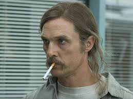
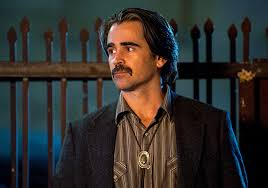
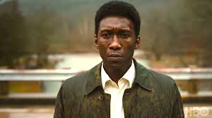
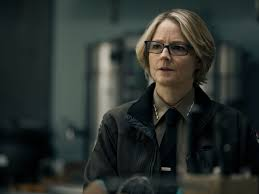
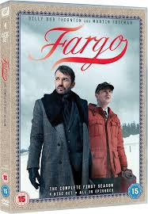
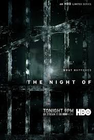

True Detective
⭐⭐⭐⭐⭐ Crimen, Drama, Misterio, Thriller
True Detective es una serie antológica de crimen en la que cada temporada cuenta una historia diferente con personajes nuevos. La serie es conocida por su narrativa profunda, atmósfera oscura y actuaciones estelares.
Disponible en:
 Ver en HBO Max
Ver en HBO MaxReparto Destacado

Matthew McConaughey
Rust Cohle (T1)
Woody Harrelson
Marty Hart (T1)

Colin Farrell
Ray Velcoro (T2)
Rachel McAdams
Ani Bezzerides (T2)

Mahershala Ali
Wayne Hays (T3)

Jodie Foster
Liz Danvers (T4)
Temporadas
- Temporada 1 (2014): Rust Cohle y Marty Hart investigan un asesinato ritualista en Luisiana. Aclamada por su narrativa y atmósfera filosófica.
- Temporada 2 (2015): Tres policías y un criminal se enfrentan a una red de corrupción en California. Estilo noir más político.
- Temporada 3 (2019): Un caso de niños desaparecidos en Arkansas con saltos temporales a lo largo de tres décadas.
- Temporada 4 - Night Country (2024): En Alaska, un grupo de investigadores busca a trabajadores desaparecidos en condiciones extremas.
Premios y Reconocimientos
- 5 Premios Emmy
- Premios BAFTA y Globos de Oro
- Reconocida por su guion, dirección y fotografía
La gente también ha visto

Fargo

Breaking Bad

The Night Of
Contacto
Si tienes preguntas o comentarios, no dudes en ponerte en contacto con nosotros:
-
 Jenni Dariana Serna López - +52 445 215 2533
Jenni Dariana Serna López - +52 445 215 2533
-
 Juan Jesús Méndez Medina - +52 445 155 8239
Juan Jesús Méndez Medina - +52 445 155 8239
-
 Maricarmen García Zavala - +52 445 139 7933
Maricarmen García Zavala - +52 445 139 7933
-
 Luis González Lemus - +52 445 159 3546
Luis González Lemus - +52 445 159 3546
Deja un comentario
Comentarios: